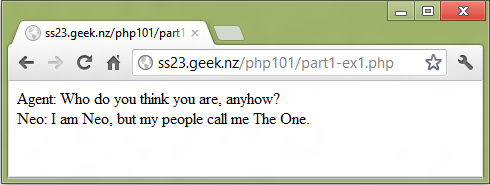

For the absolute beginner
If you're new to Web development, you could be forgiven for thinking that it consists of no more than a mass of acronyms, each one more indecipherable thanthe last. ASP, CGI, SOAP, XML, HTTP - the list seems never-ending, and the sheer volume of information on each of these can discourage the most avid programmer. But before you put on your running shoes and flee, there's a little secret you should know. To put together a cutting-edge Web site, chock full of all the latest bells and whistles, there's only one acronym you really need to know:
PHP
Now, while you have almost certainly heard of PHP, you may not be aware of just how powerful the language is, and how much it can do for you. Today, PHP has the enviable position of being the only open-source server-side scripting language that's both fun and easy to learn. This is not just advertising: recent surveys show that more than 16,000,000 Web sites use PHP as a server side scripting language, and the language also tops the list of most popular Apache modules.
Why, you ask? The short answer: it's powerful, it's easy to use, and it's free. Extremely robust and scalable, PHP can be used for the most demanding of applications, and delivers excellent performance even at high loads. Built-in database support means that you can begin creating data-driven applications immediately, XML support makes it suitable for the new generation of XML-enabled applications, and the extensible architecture makes it easy for developers to use it as a framework to build their own custom modules. Toss in a great manual, a knowledgeable developer community and a really low price (can you spell f-r-e-e?) and you've got the makings of a winner!
My goal in this series of tutorials is very simple: I'll be teaching you the basics of using PHP, and showing you why I think it's the best possible tool for Web application development today. I'll be making no assumptions about your level of knowledge, other than that you can understand basic HTML and have a sense of humor. On the off chance you were wondering, this tutorial covers PHP 5.2 and upwards. If we use anything newer than 5.2, we'll try make a note. Note however, that since the tutorial was adapated from an old version, there may be references to PHP 4. You can just ignore these, as no sane programmer bothers with it anymore.
Let's get going!
PHP is typically used in combination with a Web server like Apache. Requests for PHP scripts are received by the Web server, and are handled by the PHP interpreter. The results obtained after execution are returned to the Web server, which takes care of transmitting them to the client browser. Within the PHP script itself, the sky's the limit - your script can perform calculations, process user input, interact with a database, read and write files… Basically, anything you can do with a regular programming language, you can do inside your PHP scripts.
From the above, it is clear that in order to begin using PHP, you need to have a proper development environment set up.
This series will focus on using PHP with the Apache Web server on Linux, but you can just as easily use PHP with Apache on Windows, UNIX and Mac OS. Detailed instructions on how to set up this development environment on each platform are available in the online manual, at http://www.php.net/manual/en/installation.php - or you can just download a copy of PHP 5 from http://www.php.net and read the installation instructions.
If you're on Windows, there's an even easier option - WampServer or XAMPP. They're a bundle package of PHP, MySQL, and Apache, already set up for you. Either of these should work fine, however, you may have to look at their documentation.
Go do that now, and come back when you've successfully installed and tested PHP.
There's one essential concept that you need to get your mind around before we proceed further. Unlike CGI scripts, which require you to write code to output HTML, PHP lets you embed PHP code in regular HTML pages, and execute the embedded PHP code when the page is requested.
These embedded PHP commands are enclosed within special start and end tags, like this:
{% highlight php %}{% endhighlight %}Here's a simple example that demonstrates how PHP and HTML can be combined:
{% highlight php %}Not quite your traditional "Hello, World" program... but then again, I always thought tradition was over-rated.
Save the above script to a location under your Web server document root, with a .php extension, and browse to it. You'll see something like this:
Look at the HTML source:
{% highlight html %} Agent: Who do you think you are, anyhow?What just happened? When you requested the script above, Apache intercepted your request and handed it off to PHP. PHP then parsed the script, executing the code between the <?php...?> marks and replacing it with the output of the code run. The result was then handed back to the server and transmitted to the client. Since the output contained valid HTML, the browser was able to render it for display to the user.
A close look at the script will reveal the basic syntactical rules of PHP. Every PHP statement ends in a semi-colon. This convention is identical to that used in Perl, and omitting the semi-colon is one of the most common mistakes newbies make. That said, it is interesting to note that a semi-colon is not needed to terminate the last line of a PHP block. The PHP closing tag includes a semi-colon, therefore the following is perfectly valid PHP code:
{% highlight php %}{% endhighlight %}Now, for the rest of the examples, I may omit the extra <html> and other tags where they aren't required for an example, for breviety. Remember to write valid HTML in real applications.
Now back to PHP - it's also possible to add comments to your PHP code, as I've done in the example above. PHP supports both single-line and multi-line comment blocks:
{% highlight php %}{% endhighlight %}Which should I use, you might ask? Well, comments are only for us humans, so you should use whatever looks better. It may be counter-intuitive, but thats the way it is. Note though, you should try be consitent. That means, not choosing one randomly every time you want to make a comment, but rather deciding which you will use in which case, and sticking with it. Inconsistency is the arch-enemy of us programmers.
Also, blank lines within the PHP tags are ignored by the parser. Everything outside the tags is also ignored by the parser, and returned as-is. Only the code between the tags is read and executed.
Variables are the bread and butter of every programming language... and PHP has them too. A variable can be thought of as a programming construct used to store both numeric and non-numeric data; the contents of a variable can be altered during program execution. Finally, variables can be compared with each other, and you - the programmer - can write code that performs specific actions on the basis of this comparison.
PHP supports a number of different variable types: integers, floating point numbers, strings and arrays. In many languages, it's essential to specify the variable type before using it: for example, a variable may need to be specified as type integer or type array. Give PHP credit for a little intelligence, though: it automagically determines variable type by the context in which it is being used!
Every variable has a name. In PHP, a variable name is preceded by a dollar ($) symbol and must begin with a letter or underscore, optionally followed by more letters, numbers and/or underscores. For example, $popeye, $one and $INCOME are all valid PHP variable names, while $123 and $48hrs are invalid.
Note that variable names in PHP are case sensitive, so $me is different from $Me or $ME.
Here's a simple example that demonstrates PHP's variables:
{% highlight php %}Agent: So who do you think you are, anyhow?Here, the variables $name, $rank and $serialNumber are first defined with string and numeric values, and then substituted in the echo language construct. For now, you can think of echo as a function that you don't have to use parenthises for (as shown in the example). echo, along with the print() function, are commonly used to print data to the standard output device (here, the browser). Notice that I've included HTML tags within the call to echo(), and those have been rendered by the browser in its output. You can do this too. Really.
Once again you may be wondering: Which should I use? echo or print? Once again, it doesn't matter, as long as you're consitent. You'll find echo more common, so if you have no personal preference, using echo consitently is a good choice.
To assign a value to a variable, you use the assignment operator: the = symbol. This is used to assign a value (the right side of the equation) to a variable (the left side). The value being assigned need not always be fixed; it could also be another variable, an expression, or even an expression involving other variables, as below:
Interestingly, you can also perform more than one assignment at a time. Consider the following example, which assigns three variables the same value simultaneously:
{% highlight php %}{% endhighlight %}Every language has different types of variable - and PHP is no exception. The language supports a wide variety of data types, including simple numeric, character, string and Boolean types, and more complex arrays and objects. Here's a quick list of the basic ones, with examples:
To learn more about PHP's data types, visit http://www.php.net/manual/en/language.types.php.
If variables are the building blocks of a programming language, operators are the glue that let you build something useful with them. You've already seen one example of an operator - the assignment operator -, which lets you assign a value to a variable. Since PHP believes in spoiling you, it also comes with operators for arithmetic, string, comparison and logical operations.
A good way to get familiar with operators is to use them to perform arithmetic operations on variables, as in the following example:
{% highlight php %} Quantity:Looks complex? Don't be afraid - it's actually pretty simple. The meat of the script is at the top, where I've set up variables for the unit cost and the quantity. Next, I've performed a bunch of calculations using PHP's various mathematical operators, and stored the results of those calculations in different variables. The rest of the script is related to the display of the resulting calculations in a neat table.
If you'd like, you can even perform an arithmetic operation simultaneously with an assignment, by using the two operators together. The two code snippets below are equivalent:
{% highlight php %}{% endhighlight %}If you don't believe me, try echoing them both.
Why stop with numbers? PHP also allows you to add strings with the string concatenation operator, represented by a period (.). Take a look:
{% highlight php %}' $statement = $a.' '.$b.' '.$c.' '.$d.'As before, you can concatenate and assign simultaneously, as below:
{% highlight php %}{% endhighlight %}To learn more about PHP's arithmetic and string operators, visit http://www.php.net/manual/en/language.operators.arithmetic.php and http://www.php.net/manual/en/language.operators.string.php.
That's about it for this tutorial. You now know all about the basic building blocks and glue of PHP - its variables and operators. In Part Two of this series, I'll be using these fundamental concepts to demonstrate PHP's powerful form processing capabilities.